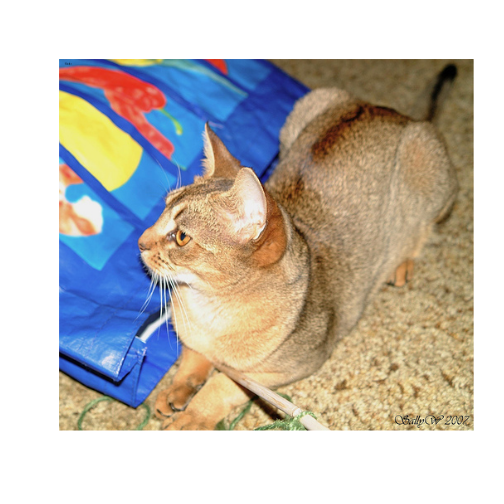
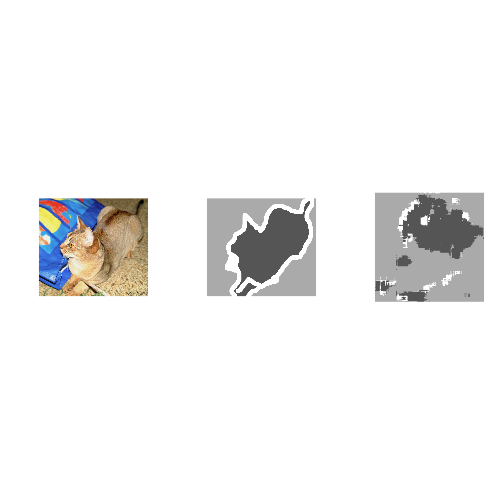

Image segmentation with a U-Net-like architecture
Source:vignettes/examples/oxford_pets_image_segmentation.Rmd
oxford_pets_image_segmentation.RmdDownload the data
options(timeout = 5000)
download.file(
"https://www.robots.ox.ac.uk/~vgg/data/pets/data/images.tar.gz",
"datasets/images.tar.gz"
)
download.file(
"https://www.robots.ox.ac.uk/~vgg/data/pets/data/annotations.tar.gz",
"datasets/annotations.tar.gz"
)
untar("datasets/images.tar.gz", exdir = "datasets")
untar("datasets/annotations.tar.gz", exdir = "datasets")Prepare paths of input images and target segmentation masks
library(keras3)
input_dir <- "datasets/images/"
target_dir <- "datasets/annotations/trimaps/"
img_size <- c(160, 160)
num_classes <- 3
batch_size <- 32
input_img_paths <- fs::dir_ls(input_dir, glob = "*.jpg") |> sort()
target_img_paths <- fs::dir_ls(target_dir, glob = "*.png") |> sort()
cat("Number of samples:", length(input_img_paths), "\n")## Number of samples: 7390
for (i in 1:10) {
cat(input_img_paths[i], "|", target_img_paths[i], "\n")
}## datasets/images/Abyssinian_1.jpg | datasets/annotations/trimaps/Abyssinian_1.png
## datasets/images/Abyssinian_10.jpg | datasets/annotations/trimaps/Abyssinian_10.png
## datasets/images/Abyssinian_100.jpg | datasets/annotations/trimaps/Abyssinian_100.png
## datasets/images/Abyssinian_101.jpg | datasets/annotations/trimaps/Abyssinian_101.png
## datasets/images/Abyssinian_102.jpg | datasets/annotations/trimaps/Abyssinian_102.png
## datasets/images/Abyssinian_103.jpg | datasets/annotations/trimaps/Abyssinian_103.png
## datasets/images/Abyssinian_104.jpg | datasets/annotations/trimaps/Abyssinian_104.png
## datasets/images/Abyssinian_105.jpg | datasets/annotations/trimaps/Abyssinian_105.png
## datasets/images/Abyssinian_106.jpg | datasets/annotations/trimaps/Abyssinian_106.png
## datasets/images/Abyssinian_107.jpg | datasets/annotations/trimaps/Abyssinian_107.pngWhat does one input image and corresponding segmentation mask look like?

plot of chunk unnamed-chunk-4
target_img_paths[10] |>
png::readPNG() |>
magrittr::multiply_by(255)|>
as.raster(max = 3) |>
plot()
plot of chunk unnamed-chunk-4
Prepare dataset to load & vectorize batches of data
##
## Attaching package: 'tensorflow'## The following objects are masked from 'package:keras3':
##
## set_random_seed, shape##
## Attaching package: 'tfdatasets'## The following object is masked from 'package:keras3':
##
## shape
# Returns a tf_dataset
get_dataset <- function(batch_size, img_size, input_img_paths, target_img_paths,
max_dataset_len = NULL) {
img_size <- as.integer(img_size)
load_img_masks <- function(input_img_path, target_img_path) {
input_img <- input_img_path |>
tf$io$read_file() |>
tf$io$decode_jpeg(channels = 3) |>
tf$image$resize(img_size) |>
tf$image$convert_image_dtype("float32")
target_img <- target_img_path |>
tf$io$read_file() |>
tf$io$decode_png(channels = 1) |>
tf$image$resize(img_size, method = "nearest") |>
tf$image$convert_image_dtype("uint8")
# Ground truth labels are 1, 2, 3. Subtract one to make them 0, 1, 2:
target_img <- target_img - 1L
list(input_img, target_img)
}
if (!is.null(max_dataset_len)) {
input_img_paths <- input_img_paths[1:max_dataset_len]
target_img_paths <- target_img_paths[1:max_dataset_len]
}
list(input_img_paths, target_img_paths) |>
tensor_slices_dataset() |>
dataset_map(load_img_masks, num_parallel_calls = tf$data$AUTOTUNE)|>
dataset_batch(batch_size)
}Prepare U-Net Xception-style model
get_model <- function(img_size, num_classes) {
inputs <- keras_input(shape = c(img_size, 3))
### [First half of the network: downsampling inputs] ###
# Entry block
x <- inputs |>
layer_conv_2d(filters = 32, kernel_size = 3, strides = 2, padding = "same") |>
layer_batch_normalization() |>
layer_activation("relu")
previous_block_activation <- x # Set aside residual
for (filters in c(64, 128, 256)) {
x <- x |>
layer_activation("relu") |>
layer_separable_conv_2d(filters = filters, kernel_size = 3, padding = "same") |>
layer_batch_normalization() |>
layer_activation("relu") |>
layer_separable_conv_2d(filters = filters, kernel_size = 3, padding = "same") |>
layer_batch_normalization() |>
layer_max_pooling_2d(pool_size = 3, strides = 2, padding = "same")
residual <- previous_block_activation |>
layer_conv_2d(filters = filters, kernel_size = 1, strides = 2, padding = "same")
x <- layer_add(x, residual) # Add back residual
previous_block_activation <- x # Set aside next residual
}
### [Second half of the network: upsampling inputs] ###
for (filters in c(256, 128, 64, 32)) {
x <- x |>
layer_activation("relu") |>
layer_conv_2d_transpose(filters = filters, kernel_size = 3, padding = "same") |>
layer_batch_normalization() |>
layer_activation("relu") |>
layer_conv_2d_transpose(filters = filters, kernel_size = 3, padding = "same") |>
layer_batch_normalization() |>
layer_upsampling_2d(size = 2)
# Project residual
residual <- previous_block_activation |>
layer_upsampling_2d(size = 2) |>
layer_conv_2d(filters = filters, kernel_size = 1, padding = "same")
x <- layer_add(x, residual) # Add back residual
previous_block_activation <- x # Set aside next residual
}
# Add a per-pixel classification layer
outputs <- x |>
layer_conv_2d(num_classes, 3, activation = "softmax", padding = "same")
# Define the model
keras_model(inputs, outputs)
}
# Build model
model <- get_model(img_size, num_classes)
summary(model)## Model: "functional_1"
## ┏━━━━━━━━━━━━━━━━━━━┳━━━━━━━━━━━━━━━━━┳━━━━━━━━┳━━━━━━━━━━━━━━━━━━━┳━━━━━━━┓
## ┃ ┃ ┃ Param ┃ ┃ ┃
## ┃ Layer (type) ┃ Output Shape ┃ # ┃ Connected to ┃ Trai… ┃
## ┡━━━━━━━━━━━━━━━━━━━╇━━━━━━━━━━━━━━━━━╇━━━━━━━━╇━━━━━━━━━━━━━━━━━━━╇━━━━━━━┩
## │ input_layer │ (None, 160, │ 0 │ - │ - │
## │ (InputLayer) │ 160, 3) │ │ │ │
## ├───────────────────┼─────────────────┼────────┼───────────────────┼───────┤
## │ conv2d (Conv2D) │ (None, 80, 80, │ 896 │ input_layer[0][0] │ Y │
## │ │ 32) │ │ │ │
## ├───────────────────┼─────────────────┼────────┼───────────────────┼───────┤
## │ batch_normalizat… │ (None, 80, 80, │ 128 │ conv2d[0][0] │ Y │
## │ (BatchNormalizat… │ 32) │ │ │ │
## ├───────────────────┼─────────────────┼────────┼───────────────────┼───────┤
## │ activation │ (None, 80, 80, │ 0 │ batch_normalizat… │ - │
## │ (Activation) │ 32) │ │ │ │
## ├───────────────────┼─────────────────┼────────┼───────────────────┼───────┤
## │ activation_2 │ (None, 80, 80, │ 0 │ activation[0][0] │ - │
## │ (Activation) │ 32) │ │ │ │
## ├───────────────────┼─────────────────┼────────┼───────────────────┼───────┤
## │ separable_conv2d… │ (None, 80, 80, │ 2,400 │ activation_2[0][… │ Y │
## │ (SeparableConv2D) │ 64) │ │ │ │
## ├───────────────────┼─────────────────┼────────┼───────────────────┼───────┤
## │ batch_normalizat… │ (None, 80, 80, │ 256 │ separable_conv2d… │ Y │
## │ (BatchNormalizat… │ 64) │ │ │ │
## ├───────────────────┼─────────────────┼────────┼───────────────────┼───────┤
## │ activation_1 │ (None, 80, 80, │ 0 │ batch_normalizat… │ - │
## │ (Activation) │ 64) │ │ │ │
## ├───────────────────┼─────────────────┼────────┼───────────────────┼───────┤
## │ separable_conv2d │ (None, 80, 80, │ 4,736 │ activation_1[0][… │ Y │
## │ (SeparableConv2D) │ 64) │ │ │ │
## ├───────────────────┼─────────────────┼────────┼───────────────────┼───────┤
## │ batch_normalizat… │ (None, 80, 80, │ 256 │ separable_conv2d… │ Y │
## │ (BatchNormalizat… │ 64) │ │ │ │
## ├───────────────────┼─────────────────┼────────┼───────────────────┼───────┤
## │ max_pooling2d │ (None, 40, 40, │ 0 │ batch_normalizat… │ - │
## │ (MaxPooling2D) │ 64) │ │ │ │
## ├───────────────────┼─────────────────┼────────┼───────────────────┼───────┤
## │ conv2d_1 (Conv2D) │ (None, 40, 40, │ 2,112 │ activation[0][0] │ Y │
## │ │ 64) │ │ │ │
## ├───────────────────┼─────────────────┼────────┼───────────────────┼───────┤
## │ add (Add) │ (None, 40, 40, │ 0 │ max_pooling2d[0]… │ - │
## │ │ 64) │ │ conv2d_1[0][0] │ │
## ├───────────────────┼─────────────────┼────────┼───────────────────┼───────┤
## │ activation_4 │ (None, 40, 40, │ 0 │ add[0][0] │ - │
## │ (Activation) │ 64) │ │ │ │
## ├───────────────────┼─────────────────┼────────┼───────────────────┼───────┤
## │ separable_conv2d… │ (None, 40, 40, │ 8,896 │ activation_4[0][… │ Y │
## │ (SeparableConv2D) │ 128) │ │ │ │
## ├───────────────────┼─────────────────┼────────┼───────────────────┼───────┤
## │ batch_normalizat… │ (None, 40, 40, │ 512 │ separable_conv2d… │ Y │
## │ (BatchNormalizat… │ 128) │ │ │ │
## ├───────────────────┼─────────────────┼────────┼───────────────────┼───────┤
## │ activation_3 │ (None, 40, 40, │ 0 │ batch_normalizat… │ - │
## │ (Activation) │ 128) │ │ │ │
## ├───────────────────┼─────────────────┼────────┼───────────────────┼───────┤
## │ separable_conv2d… │ (None, 40, 40, │ 17,664 │ activation_3[0][… │ Y │
## │ (SeparableConv2D) │ 128) │ │ │ │
## ├───────────────────┼─────────────────┼────────┼───────────────────┼───────┤
## │ batch_normalizat… │ (None, 40, 40, │ 512 │ separable_conv2d… │ Y │
## │ (BatchNormalizat… │ 128) │ │ │ │
## ├───────────────────┼─────────────────┼────────┼───────────────────┼───────┤
## │ max_pooling2d_1 │ (None, 20, 20, │ 0 │ batch_normalizat… │ - │
## │ (MaxPooling2D) │ 128) │ │ │ │
## ├───────────────────┼─────────────────┼────────┼───────────────────┼───────┤
## │ conv2d_2 (Conv2D) │ (None, 20, 20, │ 8,320 │ add[0][0] │ Y │
## │ │ 128) │ │ │ │
## ├───────────────────┼─────────────────┼────────┼───────────────────┼───────┤
## │ add_1 (Add) │ (None, 20, 20, │ 0 │ max_pooling2d_1[… │ - │
## │ │ 128) │ │ conv2d_2[0][0] │ │
## ├───────────────────┼─────────────────┼────────┼───────────────────┼───────┤
## │ activation_6 │ (None, 20, 20, │ 0 │ add_1[0][0] │ - │
## │ (Activation) │ 128) │ │ │ │
## ├───────────────────┼─────────────────┼────────┼───────────────────┼───────┤
## │ separable_conv2d… │ (None, 20, 20, │ 34,176 │ activation_6[0][… │ Y │
## │ (SeparableConv2D) │ 256) │ │ │ │
## ├───────────────────┼─────────────────┼────────┼───────────────────┼───────┤
## │ batch_normalizat… │ (None, 20, 20, │ 1,024 │ separable_conv2d… │ Y │
## │ (BatchNormalizat… │ 256) │ │ │ │
## ├───────────────────┼─────────────────┼────────┼───────────────────┼───────┤
## │ activation_5 │ (None, 20, 20, │ 0 │ batch_normalizat… │ - │
## │ (Activation) │ 256) │ │ │ │
## ├───────────────────┼─────────────────┼────────┼───────────────────┼───────┤
## │ separable_conv2d… │ (None, 20, 20, │ 68,096 │ activation_5[0][… │ Y │
## │ (SeparableConv2D) │ 256) │ │ │ │
## ├───────────────────┼─────────────────┼────────┼───────────────────┼───────┤
## │ batch_normalizat… │ (None, 20, 20, │ 1,024 │ separable_conv2d… │ Y │
## │ (BatchNormalizat… │ 256) │ │ │ │
## ├───────────────────┼─────────────────┼────────┼───────────────────┼───────┤
## │ max_pooling2d_2 │ (None, 10, 10, │ 0 │ batch_normalizat… │ - │
## │ (MaxPooling2D) │ 256) │ │ │ │
## ├───────────────────┼─────────────────┼────────┼───────────────────┼───────┤
## │ conv2d_3 (Conv2D) │ (None, 10, 10, │ 33,024 │ add_1[0][0] │ Y │
## │ │ 256) │ │ │ │
## ├───────────────────┼─────────────────┼────────┼───────────────────┼───────┤
## │ add_2 (Add) │ (None, 10, 10, │ 0 │ max_pooling2d_2[… │ - │
## │ │ 256) │ │ conv2d_3[0][0] │ │
## ├───────────────────┼─────────────────┼────────┼───────────────────┼───────┤
## │ activation_8 │ (None, 10, 10, │ 0 │ add_2[0][0] │ - │
## │ (Activation) │ 256) │ │ │ │
## ├───────────────────┼─────────────────┼────────┼───────────────────┼───────┤
## │ conv2d_transpose… │ (None, 10, 10, │ 590,0… │ activation_8[0][… │ Y │
## │ (Conv2DTranspose) │ 256) │ │ │ │
## ├───────────────────┼─────────────────┼────────┼───────────────────┼───────┤
## │ batch_normalizat… │ (None, 10, 10, │ 1,024 │ conv2d_transpose… │ Y │
## │ (BatchNormalizat… │ 256) │ │ │ │
## ├───────────────────┼─────────────────┼────────┼───────────────────┼───────┤
## │ activation_7 │ (None, 10, 10, │ 0 │ batch_normalizat… │ - │
## │ (Activation) │ 256) │ │ │ │
## ├───────────────────┼─────────────────┼────────┼───────────────────┼───────┤
## │ conv2d_transpose │ (None, 10, 10, │ 590,0… │ activation_7[0][… │ Y │
## │ (Conv2DTranspose) │ 256) │ │ │ │
## ├───────────────────┼─────────────────┼────────┼───────────────────┼───────┤
## │ batch_normalizat… │ (None, 10, 10, │ 1,024 │ conv2d_transpose… │ Y │
## │ (BatchNormalizat… │ 256) │ │ │ │
## ├───────────────────┼─────────────────┼────────┼───────────────────┼───────┤
## │ up_sampling2d_1 │ (None, 20, 20, │ 0 │ add_2[0][0] │ - │
## │ (UpSampling2D) │ 256) │ │ │ │
## ├───────────────────┼─────────────────┼────────┼───────────────────┼───────┤
## │ up_sampling2d │ (None, 20, 20, │ 0 │ batch_normalizat… │ - │
## │ (UpSampling2D) │ 256) │ │ │ │
## ├───────────────────┼─────────────────┼────────┼───────────────────┼───────┤
## │ conv2d_4 (Conv2D) │ (None, 20, 20, │ 65,792 │ up_sampling2d_1[… │ Y │
## │ │ 256) │ │ │ │
## ├───────────────────┼─────────────────┼────────┼───────────────────┼───────┤
## │ add_3 (Add) │ (None, 20, 20, │ 0 │ up_sampling2d[0]… │ - │
## │ │ 256) │ │ conv2d_4[0][0] │ │
## ├───────────────────┼─────────────────┼────────┼───────────────────┼───────┤
## │ activation_10 │ (None, 20, 20, │ 0 │ add_3[0][0] │ - │
## │ (Activation) │ 256) │ │ │ │
## ├───────────────────┼─────────────────┼────────┼───────────────────┼───────┤
## │ conv2d_transpose… │ (None, 20, 20, │ 295,0… │ activation_10[0]… │ Y │
## │ (Conv2DTranspose) │ 128) │ │ │ │
## ├───────────────────┼─────────────────┼────────┼───────────────────┼───────┤
## │ batch_normalizat… │ (None, 20, 20, │ 512 │ conv2d_transpose… │ Y │
## │ (BatchNormalizat… │ 128) │ │ │ │
## ├───────────────────┼─────────────────┼────────┼───────────────────┼───────┤
## │ activation_9 │ (None, 20, 20, │ 0 │ batch_normalizat… │ - │
## │ (Activation) │ 128) │ │ │ │
## ├───────────────────┼─────────────────┼────────┼───────────────────┼───────┤
## │ conv2d_transpose… │ (None, 20, 20, │ 147,5… │ activation_9[0][… │ Y │
## │ (Conv2DTranspose) │ 128) │ │ │ │
## ├───────────────────┼─────────────────┼────────┼───────────────────┼───────┤
## │ batch_normalizat… │ (None, 20, 20, │ 512 │ conv2d_transpose… │ Y │
## │ (BatchNormalizat… │ 128) │ │ │ │
## ├───────────────────┼─────────────────┼────────┼───────────────────┼───────┤
## │ up_sampling2d_3 │ (None, 40, 40, │ 0 │ add_3[0][0] │ - │
## │ (UpSampling2D) │ 256) │ │ │ │
## ├───────────────────┼─────────────────┼────────┼───────────────────┼───────┤
## │ up_sampling2d_2 │ (None, 40, 40, │ 0 │ batch_normalizat… │ - │
## │ (UpSampling2D) │ 128) │ │ │ │
## ├───────────────────┼─────────────────┼────────┼───────────────────┼───────┤
## │ conv2d_5 (Conv2D) │ (None, 40, 40, │ 32,896 │ up_sampling2d_3[… │ Y │
## │ │ 128) │ │ │ │
## ├───────────────────┼─────────────────┼────────┼───────────────────┼───────┤
## │ add_4 (Add) │ (None, 40, 40, │ 0 │ up_sampling2d_2[… │ - │
## │ │ 128) │ │ conv2d_5[0][0] │ │
## ├───────────────────┼─────────────────┼────────┼───────────────────┼───────┤
## │ activation_12 │ (None, 40, 40, │ 0 │ add_4[0][0] │ - │
## │ (Activation) │ 128) │ │ │ │
## ├───────────────────┼─────────────────┼────────┼───────────────────┼───────┤
## │ conv2d_transpose… │ (None, 40, 40, │ 73,792 │ activation_12[0]… │ Y │
## │ (Conv2DTranspose) │ 64) │ │ │ │
## ├───────────────────┼─────────────────┼────────┼───────────────────┼───────┤
## │ batch_normalizat… │ (None, 40, 40, │ 256 │ conv2d_transpose… │ Y │
## │ (BatchNormalizat… │ 64) │ │ │ │
## ├───────────────────┼─────────────────┼────────┼───────────────────┼───────┤
## │ activation_11 │ (None, 40, 40, │ 0 │ batch_normalizat… │ - │
## │ (Activation) │ 64) │ │ │ │
## ├───────────────────┼─────────────────┼────────┼───────────────────┼───────┤
## │ conv2d_transpose… │ (None, 40, 40, │ 36,928 │ activation_11[0]… │ Y │
## │ (Conv2DTranspose) │ 64) │ │ │ │
## ├───────────────────┼─────────────────┼────────┼───────────────────┼───────┤
## │ batch_normalizat… │ (None, 40, 40, │ 256 │ conv2d_transpose… │ Y │
## │ (BatchNormalizat… │ 64) │ │ │ │
## ├───────────────────┼─────────────────┼────────┼───────────────────┼───────┤
## │ up_sampling2d_5 │ (None, 80, 80, │ 0 │ add_4[0][0] │ - │
## │ (UpSampling2D) │ 128) │ │ │ │
## ├───────────────────┼─────────────────┼────────┼───────────────────┼───────┤
## │ up_sampling2d_4 │ (None, 80, 80, │ 0 │ batch_normalizat… │ - │
## │ (UpSampling2D) │ 64) │ │ │ │
## ├───────────────────┼─────────────────┼────────┼───────────────────┼───────┤
## │ conv2d_6 (Conv2D) │ (None, 80, 80, │ 8,256 │ up_sampling2d_5[… │ Y │
## │ │ 64) │ │ │ │
## ├───────────────────┼─────────────────┼────────┼───────────────────┼───────┤
## │ add_5 (Add) │ (None, 80, 80, │ 0 │ up_sampling2d_4[… │ - │
## │ │ 64) │ │ conv2d_6[0][0] │ │
## ├───────────────────┼─────────────────┼────────┼───────────────────┼───────┤
## │ activation_14 │ (None, 80, 80, │ 0 │ add_5[0][0] │ - │
## │ (Activation) │ 64) │ │ │ │
## ├───────────────────┼─────────────────┼────────┼───────────────────┼───────┤
## │ conv2d_transpose… │ (None, 80, 80, │ 18,464 │ activation_14[0]… │ Y │
## │ (Conv2DTranspose) │ 32) │ │ │ │
## ├───────────────────┼─────────────────┼────────┼───────────────────┼───────┤
## │ batch_normalizat… │ (None, 80, 80, │ 128 │ conv2d_transpose… │ Y │
## │ (BatchNormalizat… │ 32) │ │ │ │
## ├───────────────────┼─────────────────┼────────┼───────────────────┼───────┤
## │ activation_13 │ (None, 80, 80, │ 0 │ batch_normalizat… │ - │
## │ (Activation) │ 32) │ │ │ │
## ├───────────────────┼─────────────────┼────────┼───────────────────┼───────┤
## │ conv2d_transpose… │ (None, 80, 80, │ 9,248 │ activation_13[0]… │ Y │
## │ (Conv2DTranspose) │ 32) │ │ │ │
## ├───────────────────┼─────────────────┼────────┼───────────────────┼───────┤
## │ batch_normalizat… │ (None, 80, 80, │ 128 │ conv2d_transpose… │ Y │
## │ (BatchNormalizat… │ 32) │ │ │ │
## ├───────────────────┼─────────────────┼────────┼───────────────────┼───────┤
## │ up_sampling2d_7 │ (None, 160, │ 0 │ add_5[0][0] │ - │
## │ (UpSampling2D) │ 160, 64) │ │ │ │
## ├───────────────────┼─────────────────┼────────┼───────────────────┼───────┤
## │ up_sampling2d_6 │ (None, 160, │ 0 │ batch_normalizat… │ - │
## │ (UpSampling2D) │ 160, 32) │ │ │ │
## ├───────────────────┼─────────────────┼────────┼───────────────────┼───────┤
## │ conv2d_7 (Conv2D) │ (None, 160, │ 2,080 │ up_sampling2d_7[… │ Y │
## │ │ 160, 32) │ │ │ │
## ├───────────────────┼─────────────────┼────────┼───────────────────┼───────┤
## │ add_6 (Add) │ (None, 160, │ 0 │ up_sampling2d_6[… │ - │
## │ │ 160, 32) │ │ conv2d_7[0][0] │ │
## ├───────────────────┼─────────────────┼────────┼───────────────────┼───────┤
## │ conv2d_8 (Conv2D) │ (None, 160, │ 867 │ add_6[0][0] │ Y │
## │ │ 160, 3) │ │ │ │
## └───────────────────┴─────────────────┴────────┴───────────────────┴───────┘
## Total params: 2,058,979 (7.85 MB)
## Trainable params: 2,055,203 (7.84 MB)
## Non-trainable params: 3,776 (14.75 KB)Set aside a validation split
# Split our img paths into a training and a validation set
val_samples <- 1000
val_samples <- sample.int(length(input_img_paths), val_samples)
train_input_img_paths <- input_img_paths[-val_samples]
train_target_img_paths <- target_img_paths[-val_samples]
val_input_img_paths <- input_img_paths[val_samples]
val_target_img_paths <- target_img_paths[val_samples]
# Instantiate dataset for each split
# Limit input files in `max_dataset_len` for faster epoch training time.
# Remove the `max_dataset_len` arg when running with full dataset.
train_dataset <- get_dataset(
batch_size,
img_size,
train_input_img_paths,
train_target_img_paths,
max_dataset_len = 1000
)
valid_dataset <- get_dataset(
batch_size, img_size, val_input_img_paths, val_target_img_paths
)Train the model
# Configure the model for training.
# We use the "sparse" version of categorical_crossentropy
# because our target data is integers.
model |> compile(
optimizer = optimizer_adam(1e-4),
loss = "sparse_categorical_crossentropy"
)
callbacks <- list(
callback_model_checkpoint(
"models/oxford_segmentation.keras", save_best_only = TRUE
)
)
# Train the model, doing validation at the end of each epoch.
epochs <- 50
model |> fit(
train_dataset,
epochs=epochs,
validation_data=valid_dataset,
callbacks=callbacks,
verbose=2
)## Epoch 1/50
## 32/32 - 53s - 2s/step - loss: 1.3455 - val_loss: 1.7104
## Epoch 2/50
## 32/32 - 2s - 65ms/step - loss: 0.9089 - val_loss: 1.9939
## Epoch 3/50
## 32/32 - 2s - 65ms/step - loss: 0.7865 - val_loss: 2.1239
## Epoch 4/50
## 32/32 - 2s - 65ms/step - loss: 0.7200 - val_loss: 2.3201
## Epoch 5/50
## 32/32 - 2s - 65ms/step - loss: 0.6853 - val_loss: 2.4222
## Epoch 6/50
## 32/32 - 2s - 65ms/step - loss: 0.6598 - val_loss: 2.5909
## Epoch 7/50
## 32/32 - 2s - 65ms/step - loss: 0.6389 - val_loss: 2.7111
## Epoch 8/50
## 32/32 - 2s - 65ms/step - loss: 0.6173 - val_loss: 2.9007
## Epoch 9/50
## 32/32 - 2s - 65ms/step - loss: 0.5979 - val_loss: 3.0063
## Epoch 10/50
## 32/32 - 2s - 65ms/step - loss: 0.5798 - val_loss: 3.1942
## Epoch 11/50
## 32/32 - 2s - 65ms/step - loss: 0.5625 - val_loss: 3.2041
## Epoch 12/50
## 32/32 - 2s - 65ms/step - loss: 0.5459 - val_loss: 3.3185
## Epoch 13/50
## 32/32 - 2s - 65ms/step - loss: 0.5284 - val_loss: 3.1717
## Epoch 14/50
## 32/32 - 2s - 65ms/step - loss: 0.5110 - val_loss: 3.1707
## Epoch 15/50
## 32/32 - 2s - 65ms/step - loss: 0.4921 - val_loss: 2.8822
## Epoch 16/50
## 32/32 - 2s - 65ms/step - loss: 0.4717 - val_loss: 2.6727
## Epoch 17/50
## 32/32 - 2s - 65ms/step - loss: 0.4495 - val_loss: 2.3151
## Epoch 18/50
## 32/32 - 2s - 65ms/step - loss: 0.4260 - val_loss: 1.9184
## Epoch 19/50
## 32/32 - 2s - 71ms/step - loss: 0.4021 - val_loss: 1.5717
## Epoch 20/50
## 32/32 - 2s - 71ms/step - loss: 0.3779 - val_loss: 1.3132
## Epoch 21/50
## 32/32 - 2s - 71ms/step - loss: 0.3541 - val_loss: 1.2000
## Epoch 22/50
## 32/32 - 2s - 72ms/step - loss: 0.3315 - val_loss: 1.0762
## Epoch 23/50
## 32/32 - 2s - 65ms/step - loss: 0.3107 - val_loss: 1.0902
## Epoch 24/50
## 32/32 - 2s - 65ms/step - loss: 0.2919 - val_loss: 1.1165
## Epoch 25/50
## 32/32 - 2s - 66ms/step - loss: 0.2755 - val_loss: 1.1280
## Epoch 26/50
## 32/32 - 2s - 65ms/step - loss: 0.2615 - val_loss: 1.1839
## Epoch 27/50
## 32/32 - 2s - 65ms/step - loss: 0.2504 - val_loss: 1.2567
## Epoch 28/50
## 32/32 - 2s - 66ms/step - loss: 0.2487 - val_loss: 1.5241
## Epoch 29/50
## 32/32 - 2s - 65ms/step - loss: 0.2888 - val_loss: 1.5717
## Epoch 30/50
## 32/32 - 2s - 65ms/step - loss: 0.3307 - val_loss: 1.3285
## Epoch 31/50
## 32/32 - 2s - 66ms/step - loss: 0.3300 - val_loss: 1.3402
## Epoch 32/50
## 32/32 - 2s - 65ms/step - loss: 0.3151 - val_loss: 2.4250
## Epoch 33/50
## 32/32 - 2s - 66ms/step - loss: 0.3007 - val_loss: 2.3580
## Epoch 34/50
## 32/32 - 2s - 65ms/step - loss: 0.2971 - val_loss: 3.0257
## Epoch 35/50
## 32/32 - 2s - 65ms/step - loss: 0.2998 - val_loss: 3.7731
## Epoch 36/50
## 32/32 - 2s - 65ms/step - loss: 0.3082 - val_loss: 1.7686
## Epoch 37/50
## 32/32 - 2s - 65ms/step - loss: 0.3215 - val_loss: 2.2977
## Epoch 38/50
## 32/32 - 2s - 66ms/step - loss: 0.3022 - val_loss: 3.6808
## Epoch 39/50
## 32/32 - 2s - 65ms/step - loss: 0.2929 - val_loss: 1.6121
## Epoch 40/50
## 32/32 - 2s - 66ms/step - loss: 0.2868 - val_loss: 2.3306
## Epoch 41/50
## 32/32 - 2s - 65ms/step - loss: 0.2775 - val_loss: 2.4752
## Epoch 42/50
## 32/32 - 2s - 65ms/step - loss: 0.2675 - val_loss: 1.9509
## Epoch 43/50
## 32/32 - 2s - 65ms/step - loss: 0.2613 - val_loss: 2.3888
## Epoch 44/50
## 32/32 - 2s - 65ms/step - loss: 0.2547 - val_loss: 2.5188
## Epoch 45/50
## 32/32 - 2s - 65ms/step - loss: 0.2473 - val_loss: 7.1793
## Epoch 46/50
## 32/32 - 2s - 66ms/step - loss: 0.2495 - val_loss: 4.6344
## Epoch 47/50
## 32/32 - 2s - 65ms/step - loss: 0.2505 - val_loss: 2.2792
## Epoch 48/50
## 32/32 - 2s - 66ms/step - loss: 0.2580 - val_loss: 6.0419
## Epoch 49/50
## 32/32 - 2s - 65ms/step - loss: 0.2640 - val_loss: 9.4719
## Epoch 50/50
## 32/32 - 2s - 66ms/step - loss: 0.2614 - val_loss: 3.3474Visualize predictions
model <- load_model("models/oxford_segmentation.keras")
# Generate predictions for all images in the validation set
val_dataset <- get_dataset(
batch_size, img_size, val_input_img_paths, val_target_img_paths
)
val_preds <- predict(model, val_dataset)## 32/32 - 4s - 127ms/step
display_mask <- function(i) {
# Quick utility to display a model's prediction.
mask <- val_preds[i,,,] %>%
apply(c(1,2), which.max) %>%
array_reshape(dim = c(img_size, 1))
mask <- abind::abind(mask, mask, mask, along = 3)
plot(as.raster(mask, max = 3))
}
# Display results for validation image #10
i <- 10
par(mfrow = c(1, 3))
# Display input image
input_img_paths[i] |>
jpeg::readJPEG() |>
as.raster() |>
plot()
# Display ground-truth target mask
target_img_paths[i] |>
png::readPNG() |>
magrittr::multiply_by(255)|>
as.raster(max = 3) |>
plot()
# Display mask predicted by our model
display_mask(i) # Note that the model only sees inputs at 150x150.

plot of chunk unnamed-chunk-9